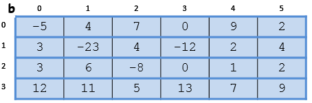
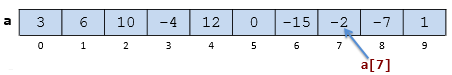
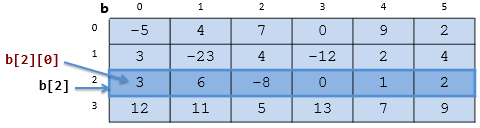
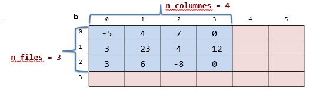

7.3 TAULES
Fonaments
Declaració (+ reserva de memòria):
- Una dimensió: tipus nom [capacitat] //capacitat és un nombre natural
- Dues dimensions: nom[capacitat_files][capacitat_columnes]
int a[10]; // vector
int b[]; // matriu o vector de vectors

La posició de cada element està especificada per índexs naturals en el rang [0..capacitat-1]. Per accedir a un element fem servir l'operador [] i els índexs que indiquen la posició del element:
- nom[índex] per a una dimensió
- nom[índex_fila] [índex_columna] per a dues dimensions


Cal distingir entre ocupació i capacitat. Mai podem sobrepassar la capacitat, però podem tenir posicions "desocupades". Caldrà tenir un control sobre les posicions ocupades.


El tipus base d'una taula pot ser qualsevol tipus elemental, a més de qualsevol struct o taula.
Els elements a[i] o b[i][j], corresponents a un vector o a una matriu d'un determinat tipus, són tractats com a simples variables d'aquest tipus.
Indexació i accessos fora de rang: En C++, els índexs dels elements d'un array de capacitat N van de 0 a N-1. Quan s'accedeix a un element que no existeix (per exemple a la posició N), es produeix un accés fora de rang, que és un error greu. C++ no dona cap missatge especial quan es produeix un accés fora de rang; pot ser un error difícil de detectar, així que cal verificar amb cura que el nostre codi no en tingui cap.
Tipus taula
struct Punt_2d {double x; double y;};
typedef int Vector_enter[100];
typedef int Matriu_enter[50][100];
// typedef Vector_enter Matriu_enter[50];
typedef Punt_2d Matriu_punt_2d[50][100];
typedef double Vector_real[100];
typedef char Vector_caracter[100];
int main(){
Vector_enter vec;
Matriu_enter mat;
Matriu_punt_2d mat_punt_2d;
...
}const unsigned N_MAX=100, N_FIL_MAX=100, N_COL_MAX=100;
struct Punt_2d {double x; double y;};
typedef int Vector_enter[N_MAX];
typedef int Matriu_enter[N_FIL_MAX][N_COL_MAX];
// typedef Vector_enter Matriu_enter[N_FIL_MAX];
typedef Punt_2d Matriu_punt_2d[N_FIL_MAX][N_COL_MAX];
typedef double Vector_real[N_MAX];
typedef char Vector_caracter[N_MAX];
int main(){
Vector_enter vec;
Matriu_enter mat;
Matriu_punt_2d mat_punt_2d;
...
}Esquemes sobre vector
- Recorregut: En general, coneixem per endavant el nombre d'elements i es fa amb un for.
- Esquema simple de recorregut (vector)
inicialització tractament per index de 0 fins n-1 fer tractar element[index] tractament final - Esquema simple de recorregut (matriu n*m)
inicialització tractament per index_fila de 0 fins n-1 fer per index_columna de 0 fins m-1 fer tractar element[index_fila][index_columna] tractament final
- Esquema simple de recorregut (vector)
- Cerca: Recorrem fins que es compleix una condició o arriba al final amb un while.
- Esquema simple de cerca (vector)
index=0 trobat=fals mentre index<n i no trobat fer tractar element (index, trobat) tractament final - Esquema simple de cerca (matriu n*m)
index_fila=0 index_columna=0 trobat=fals mentre index_fila<n i no trobat fer mentre index_columna<n i no trobat fer tractar element (index_columna, trobat) index_fila=index_fila+1 tractament final
- Esquema simple de cerca (vector)